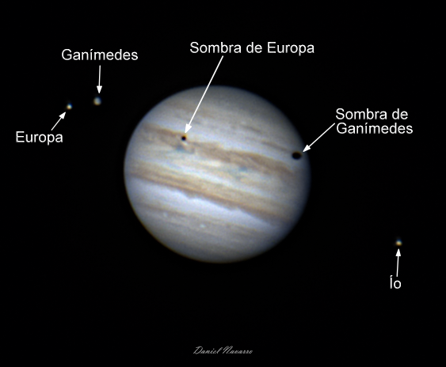

Descripción
La astrofotografía con telescopios es una disciplina fascinante que consiste en capturar imágenes del cielo nocturno utilizando cámaras especiales montadas en telescopios. Este emocionante hobby se centra en registrar objetos celestes, desde planetas y nebulosas hasta galaxias distantes. Para este propósito, se utilizan cámaras digitales sensibles a la luz, capaces de capturar detalles astronómicos débiles y distantes. Los astrónomos aficionados dividen este apasionante pasatiempo en dos categorías principales: astrofotografía de cielo profundo y astrofotografía planetaria.
